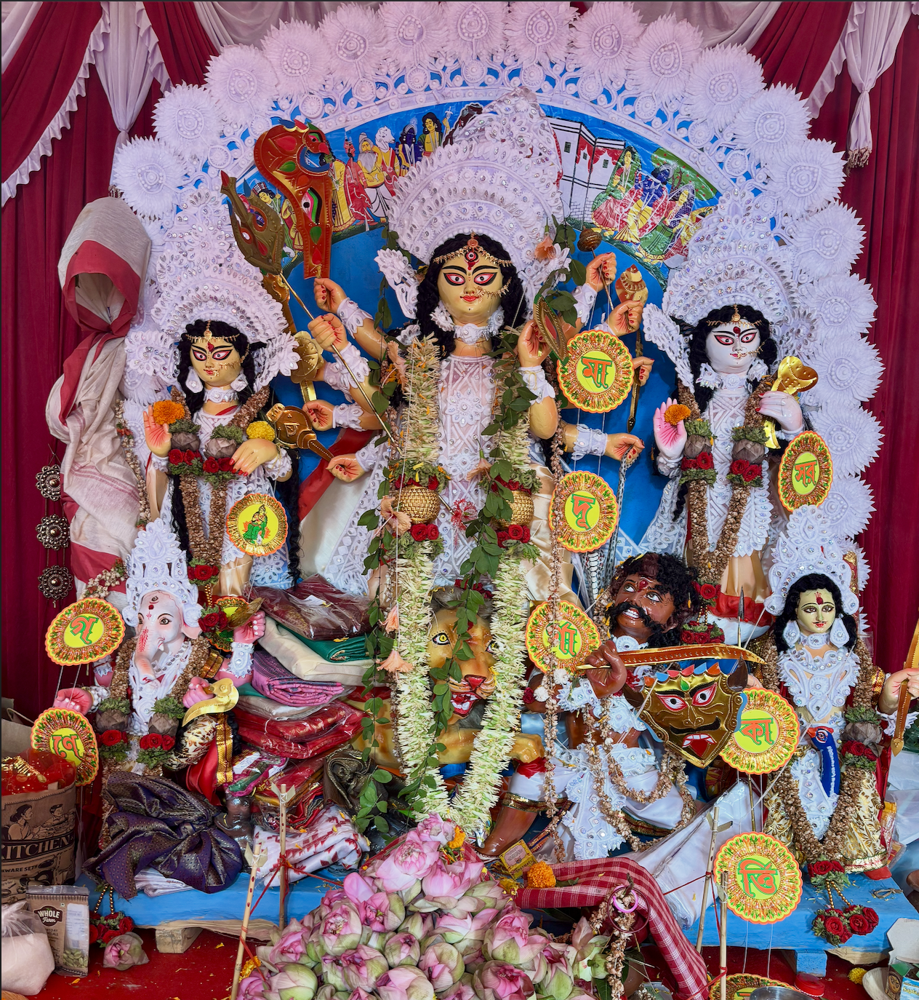
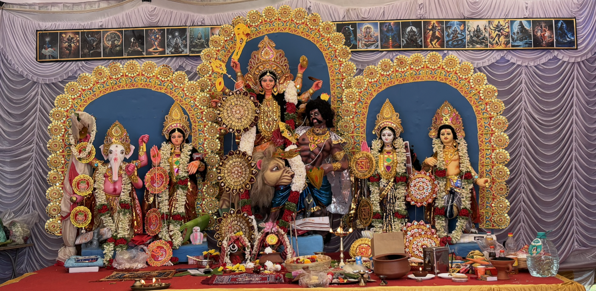
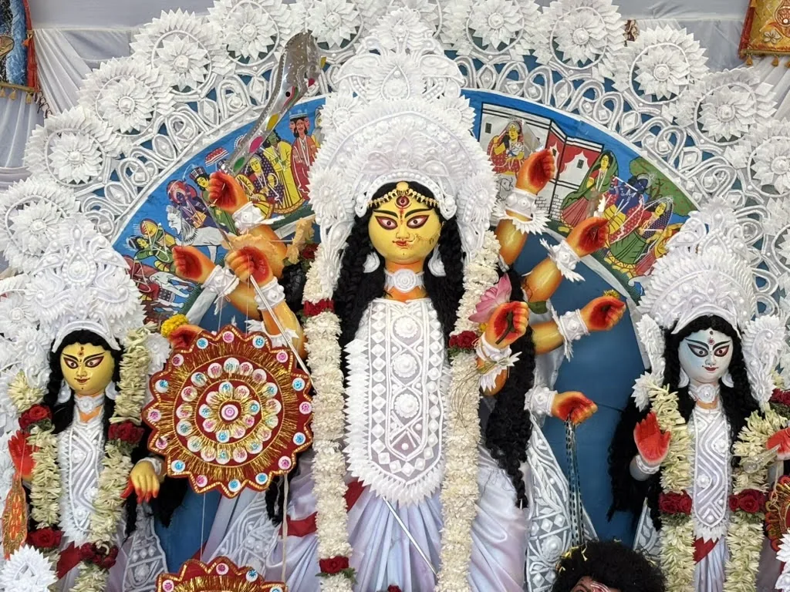
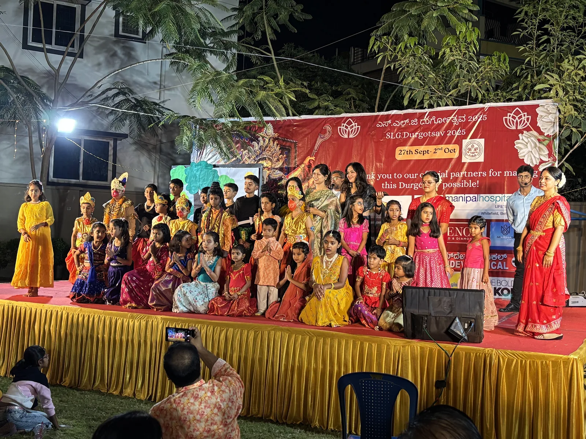
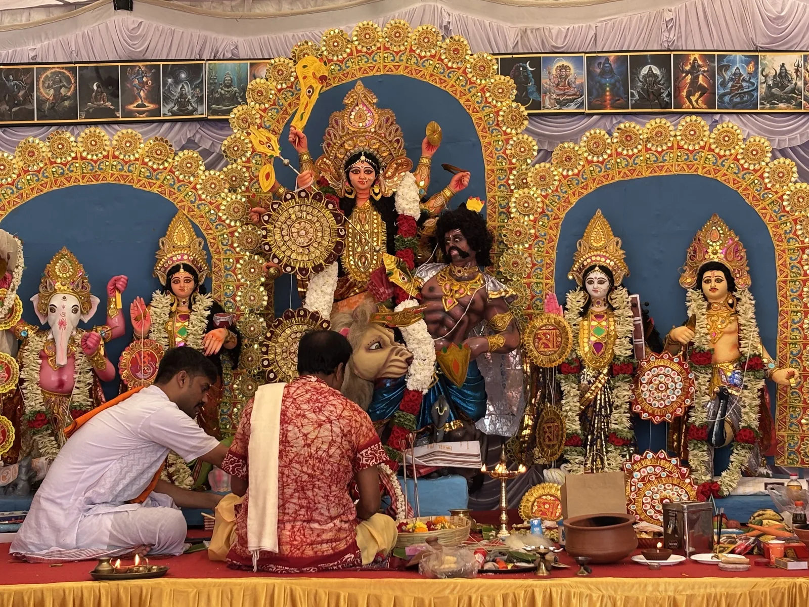
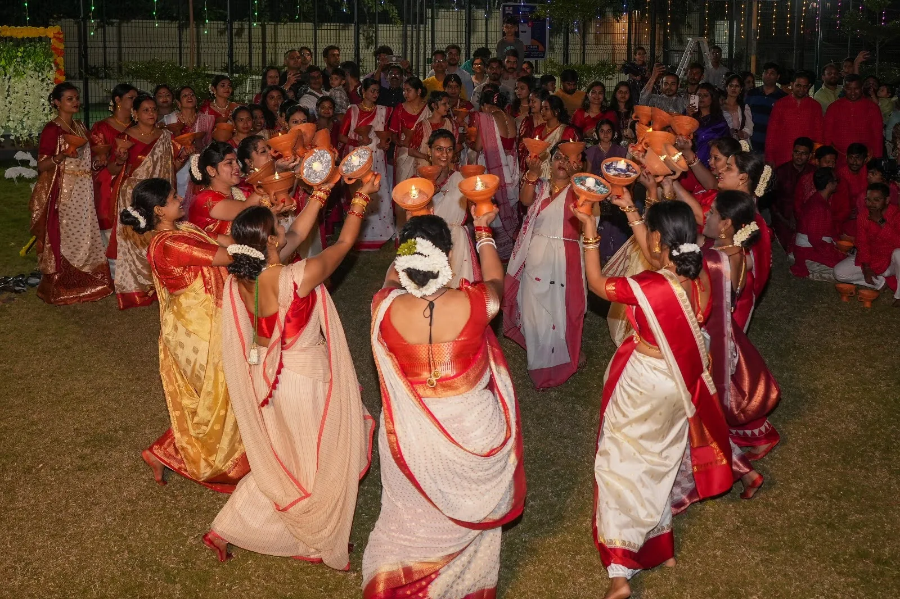
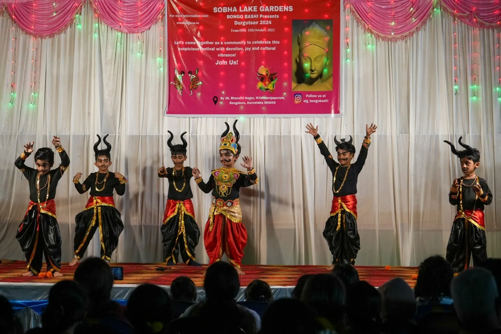
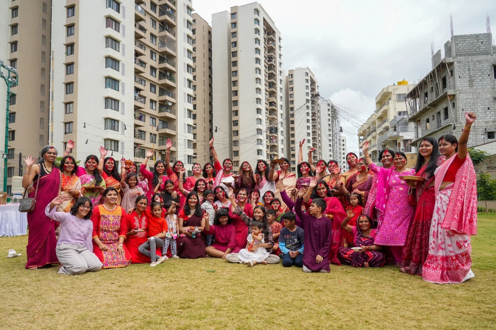
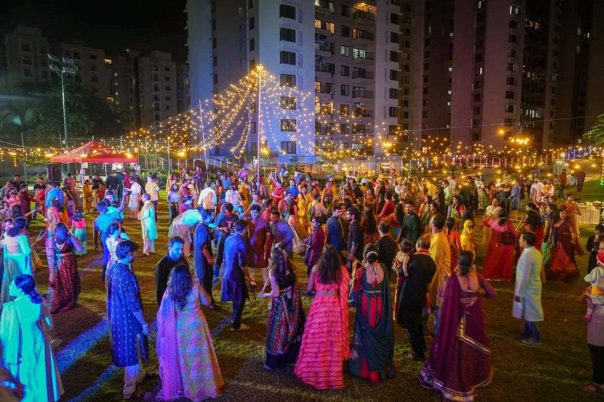

SLGBCA Cultural Hub
Gallery

Maa Durga and the divine family at SLGBCA Durgotsav 2026
Maa Durga and the divine family at the SLGBCA Durgotsav altar
Maa Durga in traditional white sholar saaj — Durgotsav 2024
Children and organizers gather after a mythological stage performance — Durgotsav 2025
Priests conduct Durga Puja rituals before Maa Durga — Durgotsav 2025
Dhunuchi dance during the Durga Puja celebrations SLG Bongobashi — 2nd Prize for Sera Decoration at Maitree Bandhan Durgotsav Puroshkar 2025
SLG Bongobashi — 2nd Prize for Sera Decoration at Maitree Bandhan Durgotsav Puroshkar 2025
Children enact Goddess Durga's fierce battle with Mahishasura — Durgotsav 2024
Sindoor Khela celebration on Vijayadashami
Community dance celebration under festive lights